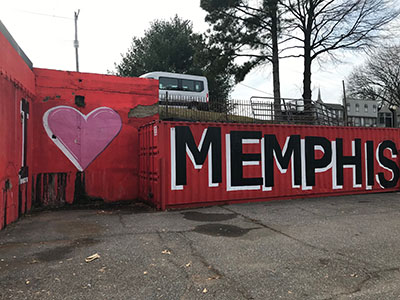

I ❤️ Memphis Murals
This specific kind of mural has taken off in the local community and influenced locals and tourists to take a selfie in front of them to make their memories last.
These murals are usually colorful and allow Memphians to show off our love for Memphis and the pride we take in our community. Located in Downtown, South Memphis, and the Cooper Young area, Memphis has been growing on this artsy theme.